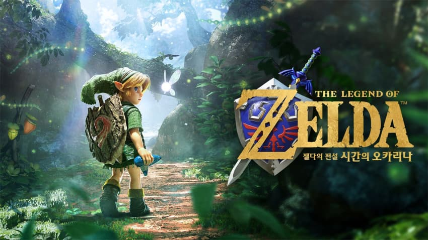
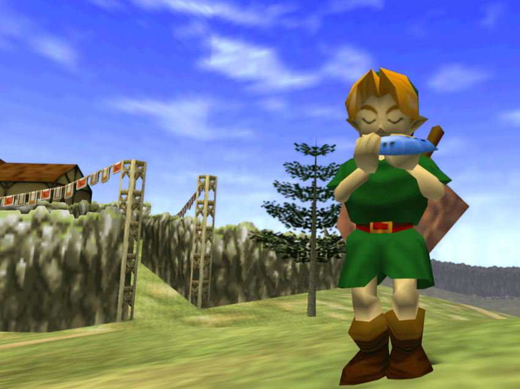
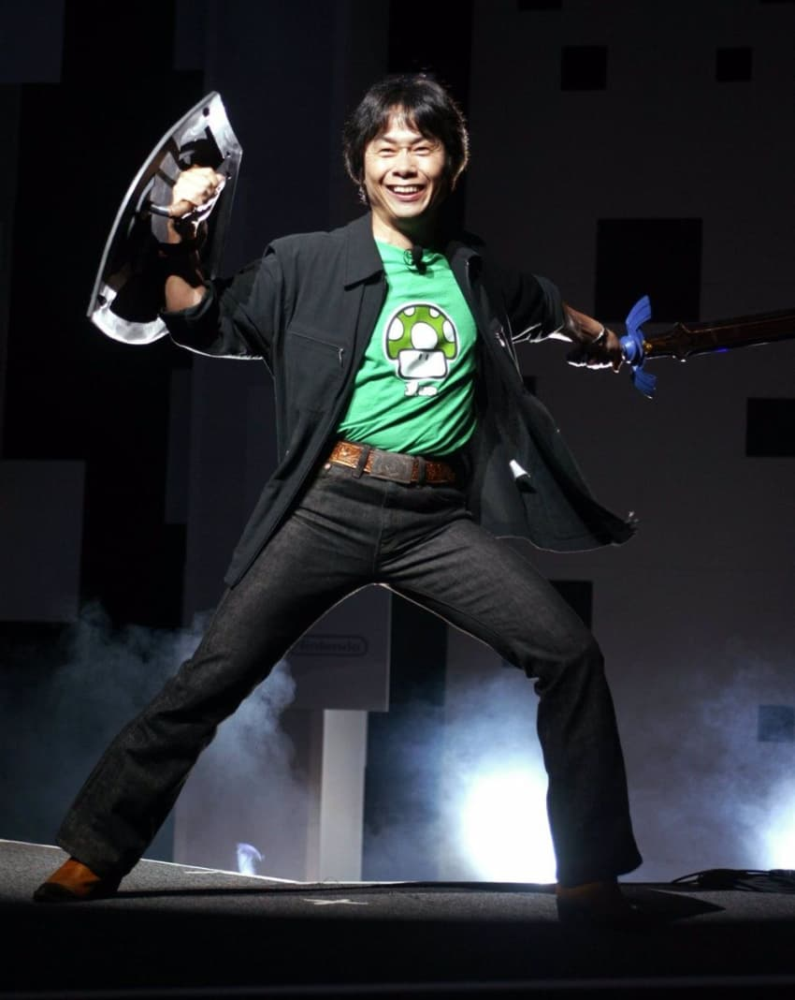
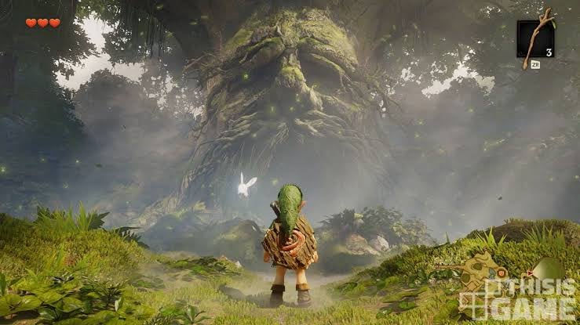
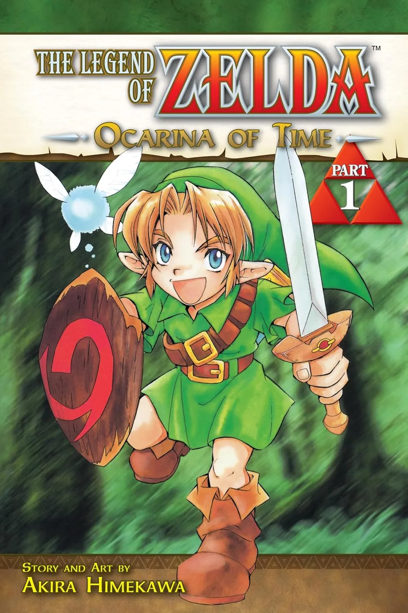
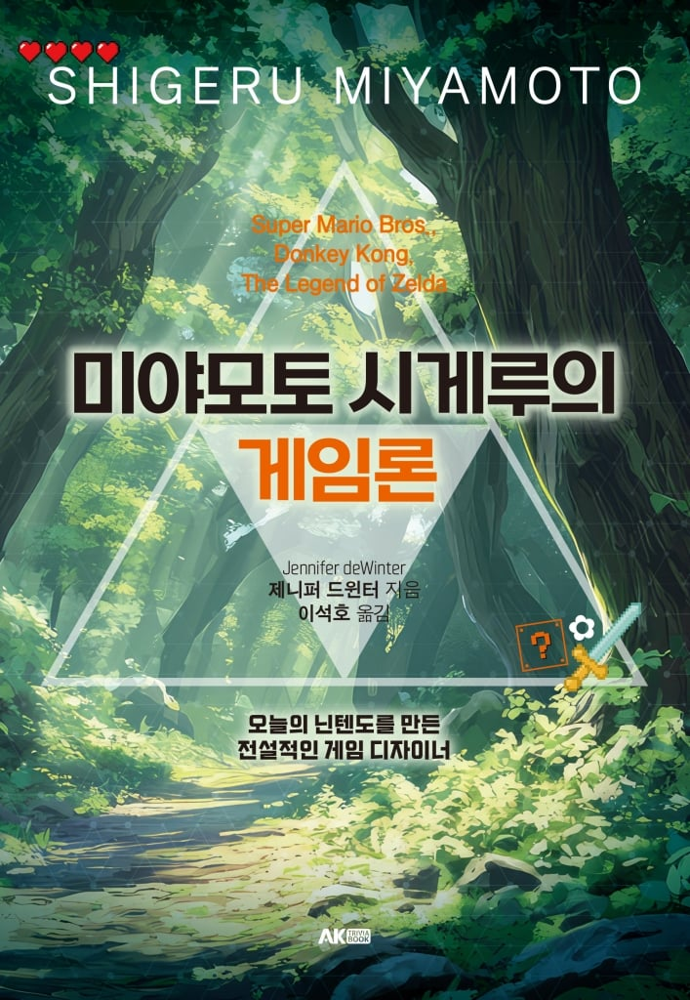

지난 11월 5일, 마침내 기어나온 <젤다의 전설 시간의 오카리1나> 리메이크!
메타크리틱 99점으로 30년째 역대 1위를 지키고 있는 원작이
너무나도 위대하기 때문에, 리메이크판을 걱정하는 사람도 제법 있었지만
주말이 한번 지난 지금, 리메이크판은 메타크리틱 96점을 기록하며
젤다 시리즈의 올드팬과 뉴비의 눈가를 촉촉히 적시고 있다.

이번 리메이크는 30년간의 기술 발전을 원작에 그대로 투영시켜
사운드, 그래픽, 조작감 등등을 개선시켰을 뿐,
원작을 충실히 재현했다는 평가를 받는다.
아니, 30년 전 게임을 이쁘게 포장해놓은 게 메타 96점이라고?
대체 원작이 얼마나 개쩌는 게임이길래?

<슈퍼 마리오>, <젤다의 전설>, <동키 콩> 등등 전설적인 작품들을 쏟아내며
오늘날의 닌텐도를 만든 미야모토 시게루.
<시간의 오카리1나>는 <젤다의 전설> 시리즈의 5번째 작품으로,
미야모토에게도, 닌텐도에게도 매우 중요한 변곡점이 된 게임인데,
닌텐도에서 최초로 개발한 3D 게임기인 닌텐도 64를 위한 게임이기 때문이다.
발매일로는 <슈퍼마리오 64>가 2년 빠르지만,
미야모토는 <시간의 오카1리나>와 <슈퍼마리오 64>를 동시에 개발하고 있었고,
두 게임은 자연스레 서로에게 영향을 끼쳤다.
단순한 3D 그래픽을 사용한 게임이야 이전에도 많았지만,
미야모토는 <시간의 오카리1나>를 통해
‘3D에서만 가능한’ 최적의 조작감과 게임성을 만들어냈다.
“가장 어려웠던 것은 버추얼 3D 세계를 만드는 것이었습니다. 플레이어가 불만을 느끼지 않을 베스트 3D 앵글을 만드는 것이 어려웠습니다. 게임은 플레이할 때 즐거운 것이어야만 합니다.” (본문 75쪽)
미야모토는 <슈퍼마리오 64>에서는 다중 시점,
즉 자동으로 제어되는 ‘추천 시점’과 플레이어가 직접 조작하는 ‘플레이어 시점’에 더해
구름을 탄 거북이 캐릭터인 ‘수한무’가 보여주는 ‘카메라맨 시점’을 조합해서
이전까지 어떤 게임도 성취하지 못한 혁신적인 조작감을 만들어냈다.
이 실험을 바탕으로 <젤다의 전설 시간의 오카리1나> 에서는
카메라를 하나의 캐릭터인 것처럼 조작하는, ‘영화적’이라고 할 방식이 도입되었다.
다만, 미야모토는 ‘영화적’이라는 말에 대해
“영화를 만들 때는 각각의 장면을 별도로 촬영하고, 나중에 편집해서 하나의 시퀀스로 연결할 수 있습니다. 젤다의 경우에는 모든 것들이 리얼 타임으로 진행되며, 그것을 카메라가 앵글과 샷을 전환하면서 찍습니다. 이 게임은 영화와는 다릅니다. 카메라가 무대의 연출자가 되는 겁니다.” (본문 79쪽)
라고 하며 게임을 ‘영화처럼’ 보는 것에 반대 의견을 내비쳤다.
사실 이러한 관점은 미야모토의 작품 세계 전체를 관통하는 철학으로,
언제나 ‘스토리보다는 체험’을 중심에 두는 것이다.
어떤 ‘체험’을 중시하는지에 따라 각 게임의 게임성이 달라진다.
마리오에서 전하고자 한 체험은 ‘놀이’였고, 젤다에서는 ‘모험’이었다.

어릴 적 미야모토는 교토의 엔부쵸에서 자라면서 우연히 동굴을 발견하고는
몇 번이고 찾아가 벽에 일렁이는 정체불명의 그림자를 바라보고 있었고,
용기를 쥐어짜내 등불을 들고 어두운 동굴을 탐험한 적이 있다고 한다.
미야모토 스스로 밝히기를 <젤다의 전설> 시리즈는 이 때 느꼈던 감정을
플레이어들에게 전달하기 위해 만들었다고 하니, <젤다의 전설> 시리즈는 문자 그대로
‘어드벤처’ 게임이라고 할 만하다.
<마리오> 같은 다른 미야모토 게임들이 그러하듯이,
<젤다의 전설> 시리즈 또한 스토리는 실로 단순하다.
마왕! 으어! 세상! 위험함! 으어! 공주! 구해! 너! 용사! 으어어!
스토리는 말하자면 게임 속 세계에 플레이어를 몰입시키기 위한
최소한의 대의명분인 셈이다. 스토리가 단순한 만큼 게임 세계는 더 디테일해진다.
“저는 지금 ‘젤다64’를 풀타임으로 개발하고 있습니다. 젤다는 〈슈퍼마리오64〉보다도 리얼한 이모션 어드벤처가 되겠죠. 플레이어 여러분이 게임을 ‘느끼는 것’을 목표로 하고 있습니다. 빛과 그림자, 온도와 습도까지 느낄 수 있도록 하고 싶습니다.” (본문 77쪽)
미야모토는 <시간의 오카리1나>의 목표를 플레이어가 게임 세계에서 존재론적인 체험을 할 수 있도록 하는 것, 즉 게임 세계 속에 존재한다는 감각과 그 세계를 여행하는 감각을 느낄 수 있도록 하는 데 두었고, 그러면서 해가 뜨고 지는 시간의 흐름 등 리얼타임 인터랙션에 심혈을 기울였다.
어린 시절 동굴을 탐험했듯, 하이랄의 세계를 정교하게 만들어놓고
그 안에 각종 수수께끼와 보물들을 숨겨둔 뒤, 플레이어를 풀어놓은 것이다.
또한 <시간의 오카리1나>에서 주인공 링크는 오카리1나를 통해
어린 시절의 자신과 성숙한 자신을 오가면서 모험을 하는데,
이를 통해 미야모토는 두 종류의 플레이 체험,
즉 순백의 상태에서 배워나가는 즐거움과 능력을 갖추고 세계를 구하는 즐거움을
모두 느낄 수 있게 했다.

(마지막은 만화판의 깜찍한 링크)
정교하게 만들어진 3D 모형 정원, 세상 친절하고 직관적이며 편리한 조작감,
시간을 넘나들며 발생하는 수많은 컨텐츠가 단순한 스토리라인과 합쳐지면
막연한 추억, 어린 시절의 기억, 게임 속 세계에 느껴지는 기묘한 향수 그 자체가
게임을 통해 전달되는 이야기가 된다.
뭣 때문에 우리는 시간의 오카1리나를 플레이하며 아래위로 축축해진 것일까?
이 게임이 전달하는 것은 어떤 메시지나 사상이 아닌, 모험을 추억하는 느낌 그 자체이기 때문이 아닐까.
마치 이세계에서 모험을 하고 현실로 돌아와 일상을 살고 있었는데,
수십 년 만에 이세계로 가는 포탈이 열리며 그때 그 동료들, 그 풍경, 그 감정이
온몸을 꿰뚫는 듯한…
어라… 어째서 나 눈물이…?
-끝-
출처

미야모토 시게루의 게임론
댓글
수집 당시 댓글 8개
ㅅㄱㅅㄱ · 11.09 17:27:18
· ㅅㄱㅅㄱ · 11.09 17:27:54
· 루마니아풍토병 · 11.09 17:28:46
· ㅅㄱㅅㄱ · 11.09 17:29:36
뽀록맨 · 11.09 17:43:48
책은도끼다 · 11.09 18:08:08
땨뗘(봇) · 11.10 19:41:07
프븨 · 11.10 19:42:10